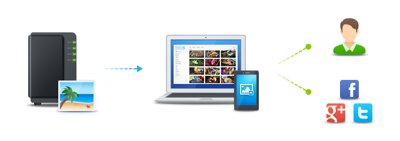
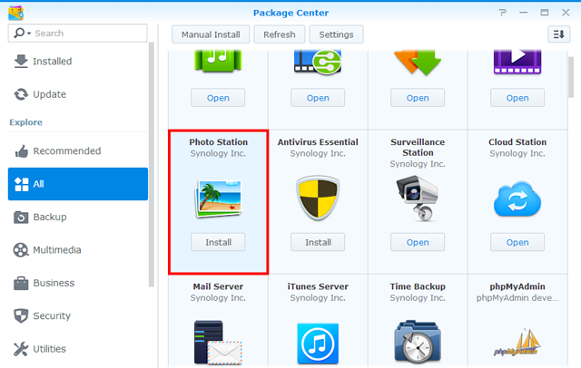
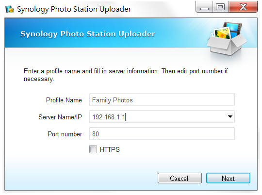
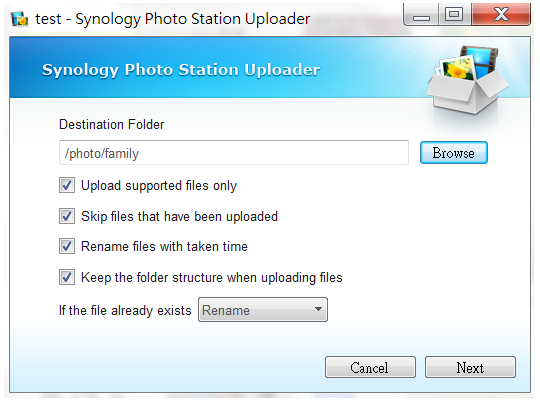
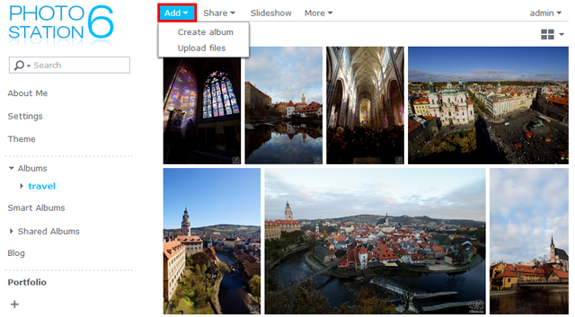
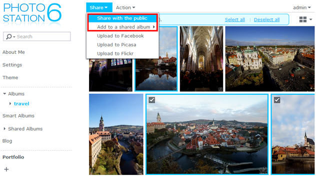
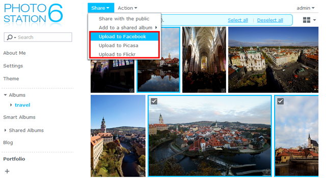
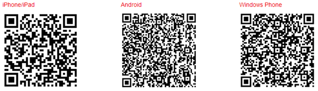

Översikt
Photo Station är ett webbbaserat program utformat att hjälpa dig organisera och visa bilder lagrade på din Synology NAS över Internet. Med sitt raffinerade och användarvänliga gränssnitt, låter Photo Station dig ladda upp, söka, hantera och dela dina fotoalbum på bara några enkla klick.
1. Installera Photo Station
För att installera Photo Station, gå till Paketcenter, sök Photo Station, och därefter klicka på Installera.

2. Ladda upp bilder
Innan du kan söka och hantera bilder i Photo Station, måste du först skapa album och ladda upp bilder med någon av dessa metoder.
2.1 Ladda upp bilder via Photo Station Uploader (för Windows och Mac)
Vi rekommenderar att du använder Photo Station Uploader eftersom miniatyrer av varje bild för att visa kommer att genereras under uppladdningsprocessen. Ladda upp filer via Photo Station Uploader kommer att utnyttja datorkapaciteten för din dator för att påskynda omvandlingen.
- Ladda ner och installera Photo Station Uploader (tillgänglig på Synologys nedladdningscenter).
- På din dator, högerklicka på en bild du vill ladda upp, och välj Ladda upp till Photo Station > Skapa ny profil för att öppna guiden.
- Ange ett namn och servernamn/IP-adressen för destinationen Synology NAS för den nya profilen.

Obs:
Serverinformationen och inloggningsuppgifter sparas till den här profilen för framtida bruk. Du kan ställa in flera profiler enligt olika regler eller destinationer. I stället för att fylla i serverinformation igen nästa gång du använder Photo Station Uploader kan du markera en befintlig profil och använda konfigurationerna inställda tidigare för att ladda upp bilder till samma destination.
- Välj om du vill ladda upp filerna till Photo Station eller Personlig Photo Station.
- Ange inloggningsuppgifter för destinationen Synology NAS.
- Klicka på Sök för att välja en destinationsmapp eller skapa en submapp under den delade mappen photo.

- När uppladdningen är klar, kan du starta Photo Station på din Synology NAS och visa filerna som laddas upp i olika lägen eller redigera andra uppgifter, till exempel albumegenskaper och åtkomstbehörigheter.
2.2 Skapa album och ladda upp bilder via Photo Station
Starta Photo Station, och klicka på Lägg till för att skapa ett nytt album eller ladda upp bilder från din dator eller Synology NAS till befintliga album.

Obs:
Om du föredrar att ladda upp bilder via Photo Station gränsnitt, rekommenderar vi att du aktiverar QuickConnect-tjänsten. Oavsett om du är hemma eller ute, med QuickConnect har du alltid tillgång till din Synology NAS och Photo Station via Internet med ett anpassat ID men utan krånglet att behöva ställa in komplicerade nätverkskonfigurationer, som regler för vidarebefordring. Mer information om QuickConnect, se denna självstudie.
3. Dela bilder
Med delningsfunktionen kan du enkelt dela bilder lagrade på Photo Station med vänner eller ladda upp bilder till populära sociala nätverk, såsom Facebook, Picasa och Flickr.
3.1 Dela bilder med allmänheten
- Sök i ett album och markera bilderna du vill dela.
- Klicka på Dela > Dela med allmänheten för att få länken.
- Om du bara har markerat en bild för delning, läggs bilden till i en delad samling kallad Delade bilder. Där kan du hantera alla de bilder du har delat en efter en.
- Om du har markerat flera bilder för delning, grupperas bilderna in i ett nytt delat album.
- Alternativt kan du klicka på Dela > Lägg till ett delat album för att lägga till de markerade bilderna till ett befintligt delat album (om tillämpligt).

- Ange ett namn för det nya delade albumet, och vid behov specificera giltighetsperioden.
- Kopiera och klistra in länken i e-postmeddelanden, snabbmeddelanden och webbsidor för att dela de markerade bilderna med alla.
Obs:
- Alla delade bilder är tillgängliga för allmänheten genom alla med länken.
- Du kan ange vilka användare kan ha privilegierna att dela Photo Station-objekt med allmänheten på Inställningar > Delning.
3.2 Dela bilder med sociala nätverk
- Markera de bilder du vill ladda upp och välj sedan Dela > Ladda upp till [webbplatser för sociala nätverk].

- I fönstret som visas klickar du på Anslut med [webbplatser för sociala nätverk] och verifiera med hjälp av ditt sociala nätverkskonto. Du kan välja att ladda upp bilderna till ett nytt eller befintligt album.
4. Organisera och sök bilder på mobila enheter
För att ansluta till Photo Station eller ladda upp bilder via mobila enheter, kan du installera DS photo+ på dina mobila enheter med nedanstående QR-koder.
